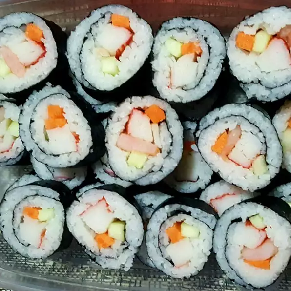

Sushi traces its origins back for millennia, to the rice fields of Asia –
China, to be specific. This may be shocking to you,
as most people assume that sushi was first created in Japan. However,
this is not the case. While Japan is certainly the sushi capital of the world –
and responsible for introducing the dish to travelers – sushi traces its origins back
to a Chinese dish called narezushi.
This dish consisted of fermented rice and salted fish. And,
despite what you may think, it wasn’t fermented and salted for flavor.
Ingredient
1 cup uncooked white rice
2 cups water
2 tablespoons rice vinegar
1 teaspoon salt
2 sheets nori seaweed sheets
¼ cucumber, peeled and sliced lengthwise
2 pieces imitation crab legs
½ (3 ounce) package cream cheese, sliced
1 teaspoon minced fresh ginger root
Directions
Steps
Bring the rice and water to a boil in a saucepan over high heat.
Reduce heat to medium-low, cover, and simmer until the rice is tender,
and the liquid has been absorbed, 20 to 25 minutes.
Stir in rice vinegar and salt. Allow to cool completely.
Lay out seaweed sheets. Moisten hands with water,
then spread the rice evenly on each sheet, leaving a 1/2 inch gap along one edge,
lengthwise. Arrange strips of cucumber, imitation crabmeat,
and cream cheese in a straight line along the side opposite of the gap.
Roll the sushi from the toppings to the exposed end of the the seaweed sheet.
Using a sharp wet knife, slice each roll into 5 or 6 pieces.
Serve with minced ginger on the side.